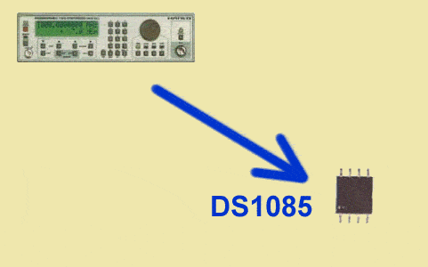

09/03/2002: Le premier synthétiseur de fréquence tout silicium: DS1085

Intégré dans un minuscule boîtier SO8, le DS1085 ne nécessite ni quartz ni composant externe. Le DS1085 est qualifié par Dallas Semiconductor de premier CI EconoSynthetizer
TMoffrant un synthétiseur de fréquence maître programmable et une chaîne de diviseurs. De fait, le DS1085 constitue un remplacement peu coûteux pour les synthétiseurs d'horloge à quartz. Deux versions de tension d'alimentation sont proposées 3V et 5V.- Oscillateur-maître numérique de 66MHz à 133MHz pleine échelle
- 3 options de résolution réglables
- Interface bifilaire pour intégration facile.
- Doubles broches de commande configurables pour mise hors tension et commande de sortie sans parasite.
- Prédiviseurs programmables (par 1, 2, 4 ou 8)
- Consommation 5µA en mode veille.
- Précision 1%
- Mémoire EEPROM de conservation des paramètre en veille.
DS1085Z-10 DS1085Z-25 DS1085Z-50 DS1085LZ-5 DS1085LZ-12 DS1085LZ-25 Vous avez sans doute plein de projets en tête qui pourraient utiliser ce composant ! Oui, mais quand chez nos fournisseurs ?